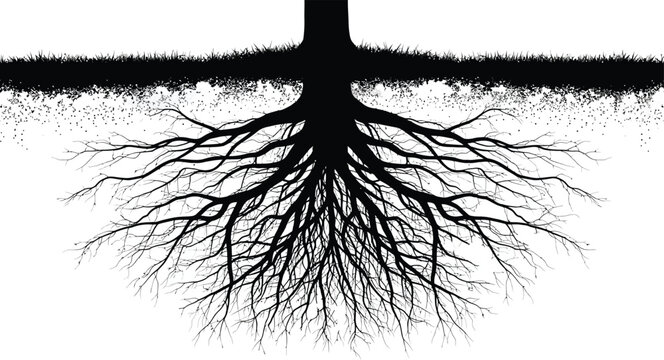
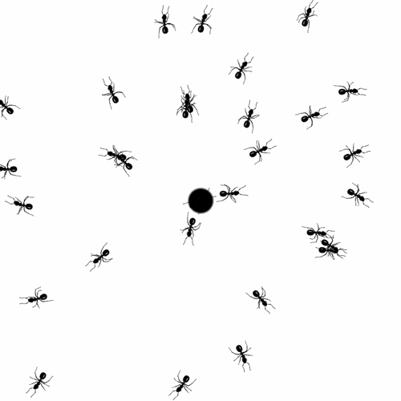

05
Biomimétisme

Racine d'arbres
Distribuent l'eau seulement là où c'est nécessaire
⮟
Distribuer puissance seulement où c'est nécessaire

Colonie de fourmis
Optimisent leurs chemins collectivement sans autorité centrale
⮟
Au lieu d'un gros centre, avoir des millions de petits ordinateurs répartis

Migration d'oiseaux
Les oiseaux migrent vers des zones qui sont climatiquement favorables
⮟
Migrer les centres dans des climats plus optimaux